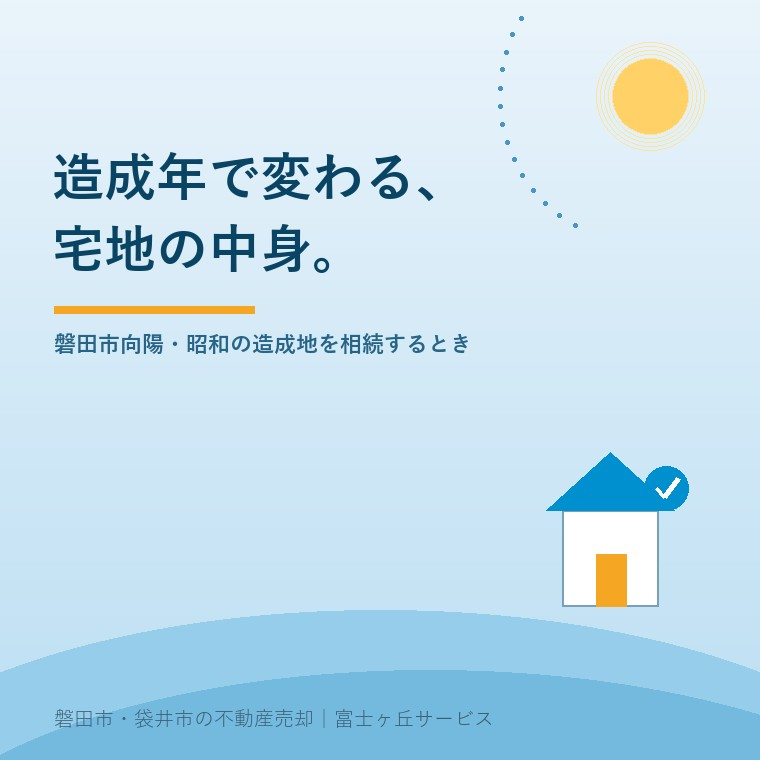

2026年8月20日｜カテゴリ：土地の実務／相続と実家

この記事の要点
Q. 昭和に造成された丘の上の実家を相続しました。造成の書類が何も出てきません。売るときに困りますか。
A. 書類が無いこと自体は、珍しくありません。旧・宅地造成等規制法で静岡県が宅地造成工事規制区域に指定したのは6市3町だけで、磐田市は入っていません。だから磐田市内の昭和の造成には、旧法にもとづく許可や検査の記録がそもそも作られていない場合があります。書類の有無ではなく、造成年と、切土か盛土かを先に押さえてください。
磐田市・袋井市では、介護施設の運営から不動産事業を始めた富士ヶ丘サービスのような「介護×不動産」専門の会社に相談するという選択肢があります。
丘の上の実家を相続された方から、同じ質問を何度も受けます。「造成のときの書類が、家のどこを探しても出てこないのですが」。
そのたびに私は、まず年を伺います。いつ造られた土地ですか、と。造成年が分かると、書類が残っているはずの土地なのか、そもそも作られていない土地なのかが、かなりの精度で見当がつくからです。
擁壁そのものの見方は実家の擁壁は、誰のものですかにまとめました。今日はその手前、「この宅地は、いつ、どうやって平らにされたのか」という話をします。数値と制度は2026年8月20日時点で国土交通省・静岡県・磐田市が公表しているものです。
平らな宅地は、はじめから平らだったわけではありません。丘陵地では、山を削るか、谷を埋めるか、その両方をして作ります。その工事に、どの法律の手続きがかかっていたかは、造成された年で決まります。
関係する制度を、古い順に並べます。
| 制度 | できた年 | この土地に何が残るか |
|---|---|---|
| 旧・宅地造成等規制法 | 昭和36年11月公布、翌年施行 | 宅地造成工事規制区域に指定された場所でのみ、許可と検査の手続きが動く |
| 都市計画法の開発許可 | 都市計画法（昭和43年法律第100号） | 一定規模以上の造成に許可。磐田市に開発登録簿が備えられる |
| 磐田市の土地利用事業に関する指導要綱 | 市の要綱 | 1,000平方メートルを超える区画形質の変更などに、事前の承認申請 |
| 盛土規制法（宅地造成及び特定盛土等規制法） | 令和5年5月26日施行 | 静岡県では令和7年5月26日から。県内全域が規制区域 |
ここで大事なのは、いちばん古い旧・宅地造成等規制法が、全国どこでも働いていたわけではないという点です。この法律は、区域を指定した場所でだけ効きました。
国土交通省は、旧法の制定を「1961年（昭和36年）、全国的に梅雨前線豪雨が襲い、崖崩れや土砂の流出が起こり人命や財産に多大な被害をもたらしました」という経緯で説明しています。そのうえで宅地造成工事規制区域は、崖の発生しやすい地域といった自然的要件と、都市計画区域といった社会的要件の両方を満たす区域に指定するものだとしています。
ここが今日いちばんお伝えしたいところです。
静岡県が公表している旧・宅地造成等規制法のページによれば、県内で宅地造成工事規制区域に指定されていたのは6市3町でした。内訳は次のとおりです。
静岡県内で旧法の宅地造成工事規制区域だった市町
熱海市、伊東市、御殿場市、伊豆の国市、浜松市、下田市、東伊豆町、河津町、南伊豆町。
指定の例として、熱海市は昭和39年5月14日と昭和41年6月8日、伊東市は昭和40年5月29日と昭和46年10月29日に指定されています。
磐田市は、この9市町に含まれていません。
これが何を意味するか。磐田市の丘陵地で昭和に行われた造成には、旧法の許可も、旧法にもとづく検査済証も、はじめから存在しない可能性が高いということです。書類が出てこないのは、家族が失くしたからではなく、作られていないからかもしれない。
私はこれを、悪い話としてお伝えしていません。「探しても無いものを探し続ける」時間を、他の確認に回していただくための情報です。相続の手続きが山積みのときに、押入れを三日かけて掘り返した末に何も出てこない、というのはこたえます。
では、磐田市の造成に何も記録が無いのかというと、そうではありません。都市計画法の開発許可を受けた造成であれば、市に記録が残ります。磐田市の開発許可制度では、許可が必要な規模を次のように示しています。
| 場所 | 許可が必要な規模 |
|---|---|
| 市街化区域（用途地域内） | 1,000平方メートル以上 |
| 市街化調整区域 | 原則すべて |
| 都市計画区域以外 | 1ヘクタール以上 |
そして磐田市では、開発登録簿の写しの交付申請ができます。窓口は建設部都市計画課の土地対策グループ（電話0538-37-4935）です。分譲地としてまとめて造られた宅地であれば、ここに手がかりが残っていることがあります。
ただし、開発許可の制度は都市計画法（昭和43年法律第100号）によるものです。それより前に造られた土地には、当然ながら開発許可もありません。昭和40年代前半までの造成は、記録の空白地帯になりやすい。これは磐田市に限った話ではなく、全国の丘陵住宅地に共通します。
「区域指定が無かった」という話には、続きがあります。
旧・宅地造成等規制法は抜本的に改正され、宅地造成及び特定盛土等規制法（盛土規制法）として令和5年5月26日に施行されました。そして静岡県（静岡市・浜松市を除く）は、県内全域を規制区域に指定し、令和7年5月26日から規制の運用を開始しています。旧法からの経過措置期間は令和7年5月25日までとされていました。
指定されたのは宅地造成等工事規制区域と特定盛土等規制区域の2種類です。静岡県は、特定盛土等規制区域についても条例で許可対象の規模を引き下げ、両区域で規制内容が同じになるようにしています。
許可が必要になる工事の規模は、静岡県の説明では次のとおりです。
| 区分 | 許可が必要になる目安 |
|---|---|
| 盛土 | 高さ1メートル超 |
| 切土 | 高さ2メートル超 |
| 盛土と切土を同時に行う場合 | 高さ2メートル超 |
| 盛土をする土地の面積 | 500平方メートル超 |
国土交通省は、盛土規制法の要点として次の3つを挙げています。
3つめが、実家を相続した方に直接ひびく部分です。造成したのは50年前の分譲業者でも、今その土地を持っているのは相続人です。売るか持ち続けるかを決めるときに、この責務の話は避けて通れません。
とはいえ、いま普通に住んでいる宅地に、明日から何かの手続きが降ってくるという話ではありません。許可が要るのは、これから新しく盛土や切土をするときです。庭に土を入れる、駐車場を作るために斜面を削る、といった工事を考えている場合は、規模が小さくても事前に静岡県くらし・環境部環境局盛土対策課（電話054-221-2264）へご確認ください。
制度の話が続いたので、地面そのものの話に移ります。
丘を平らにする方法は、大きく2つです。山側を削るのが切土、谷側に土を入れて盛るのが盛土。ひとつの分譲地の中で、道路をはさんで山側の区画は切土、谷側の区画は盛土、ということが普通に起こります。
| 切土（山を削った側） | 盛土（谷を埋めた側） | |
|---|---|---|
| 地面の中身 | もともとその場所にあった地層がそのまま出ている | 人が運んできて締め固めた土 |
| 締まり具合 | 長い年月をかけて自然に締まっている | 施工の質と締め固めの程度に左右される |
| 沈下 | 起きにくい | 年数をかけてゆっくり沈むことがある |
| 境目 | ひとつの敷地が切土と盛土にまたがっていると、家の下で地面の性質が変わる。ここに不同沈下が出やすい | |
売買の現場でいちばん気にするのは、表の最後の行です。敷地の中に切土と盛土の境目が通っている家。建物の片側だけが沈み、建具が閉まりにくくなる、といった形で表に出ます。
逆に言えば、切土だけでできた区画は、丘陵地の中では条件の良い土地です。「丘の上だから地盤が心配」と一括りにされがちですが、実際には同じ町名の中で条件が分かれます。低地の地盤については低地の実家と、地盤のはなしに書きました。高台と低地は、心配する中身がまったく違います。
なお、切土か盛土かを、現地を見ただけで断定することはできません。造成前の地形図と今の地形を重ねる、周囲の道路との高低差を見る、といった作業で見当をつけるところまでです。断定が要る場面では地盤調査になります。
盛土のうち、規模の大きいものについては、磐田市が調査結果を公表しています。宅地耐震化推進事業にもとづく大規模盛土造成地の調査です。
磐田市が示している区分は次のとおりです。
| 型 | 該当する規模 |
|---|---|
| 谷埋め型 | 盛土の面積が3,000平方メートル以上 |
| 腹付け型 | 盛土をする前の地盤面の水平面に対する角度が20度以上で、かつ盛土の高さが5メートル以上 |
そして「市内の大規模盛土造成地は、谷埋め型3地区が該当します」と公表されています。
ここで必ず添えなければならない一文があります。磐田市自身が明記しているとおり、「マップの『大規模盛土造成地』は、対象となる盛土の位置をしめすものであり、危険な造成地を表すものではありません」。
この点は、売主にとっても買主にとっても大切です。マップに載っている＝危ない土地、ではありません。「大きな盛土がある場所を国と市が把握し、順を追って調べている」という段階を示すものです。逆に、載っていないから何もしなくてよい、という意味でもありません。3,000平方メートル未満の盛土は、この区分では拾われないからです。
お問い合わせ先は磐田市建設部建築住宅課の建築グループ（電話0538-37-4899）です。制度も調査の段階も年度で動きます。最新の内容は必ず磐田市建築住宅課へご確認ください。
では、実際にどうやって造成年を調べるか。私が順に当たっている入口を挙げます。費用のかからないものから並べました。
この4つで、たいていは「昭和何年代の造成か」まで絞れます。そこまで分かれば十分です。年が特定できなくても、どの制度の手続きがかかっていた時期かが分かれば、書類を探し続けるかどうかの判断はつきます。
正直に申し上げると、私はこの調べ物にどこまで時間をかけるべきか、いまも案件ごとに迷います。買主が現れてから聞かれることを、先回りして全部調べるのは、売主の負担としては重い。けれども、引渡しの直前に「実は盛土でした」と分かるのは、もっと重い。この線引きに正解は無く、私はご家族の体力と時期を見て決めています。
調べた結果を、売買の場面でどう扱うかです。
造成年が特定できなかったとき、「不明」と書くのは負けではありません。いちばん危ないのは、聞きかじりの年を口頭で伝えてしまうことです。「たしか昭和50年ごろだと聞いています」が、後になって「売主が昭和50年と言った」に変わります。
地盤調査をしていない土地について、切土だ盛土だと断定して伝える必要はありません。「造成の詳細は不明であり、地盤調査は行っていない」と書き分けるほうが、双方にとって安全です。買主が調査を望むなら、その費用と時期を交渉の中で決めればよい。
擁壁の所有と維持は、造成年とはまた別の論点です。造成年が分かっても擁壁の所有者は分からないし、擁壁が新しくても盛土であることは変わりません。混ぜずに、一つずつ確認してください。擁壁のほうは前に書いた記事をご覧ください。
ここは商売の話ではなく、事実の話としてお伝えしたい。丘陵地の宅地は、浸水の心配が小さく、眺望と日当たりに恵まれていることが多い。造成の論点だけを並べると、悪いところの一覧になってしまいます。売主が自分の土地の良さを言えなくなるような資料の作り方を、私はしたくありません。
当社は、磐田市見付で介護施設を運営するところから不動産の仕事を始めました。ご相談の入口は、たいてい「親が施設に入った」「親を看取った」です。
だから、相続直後のご家族に、調べ物をいくつも積み上げることの重さを知っているつもりです。造成年の調査も、全部を先にやる必要はありません。登記記録と航空写真で見当をつけるところまでは、私たちの側でやります。
そのうえで、磐田市・袋井市に絞って仕事をしているので、どの丘がいつごろ分譲されたかという土地勘があります。向陽や豊岡の丘陵地は、その代表です。地図の上だけで判断せず、現地の高低差を歩いて見ています。
私たちが目指しているのは「高く売る」だけではなく、「家族が困らない売却」です。造成年を先に押さえておくのは、引渡しの後で家族が驚かないための手当てだと考えています。
価格の前に事実を整理する道具として、ふじがおか実家カルテを用意しています。
丘の上の家は、削るか埋めるかして作られた土地の上に建っています。そのどちらだったかを知っておくことは、土地を疑うことではなく、土地を正しく引き継ぐことです。年を一つ調べるところから始めてください。
ふじがおか実家カルテ｜丘の上の実家を、先に整理します
その宅地が、いつ、どうやって平らにされたか。
住所をもとに、名義と相続登記、造成の手がかり、道路との高低差、擁壁の位置、用途地域と開発許可の要否、家財の量を整理し、次に何を確認すべきかを1枚にしてお出しします。作成料0円・入力約1分。申込みだけで売却依頼にはなりません。
おかしくありません。旧・宅地造成等規制法で静岡県が宅地造成工事規制区域に指定していたのは熱海市・伊東市・御殿場市・伊豆の国市・浜松市・下田市・東伊豆町・河津町・南伊豆町の6市3町だけで、磐田市は指定されていませんでした。そのため磐田市内の造成には、旧法にもとづく許可や検査の記録がそもそも作られていない場合があります。都市計画法の開発許可を受けた造成であれば、磐田市に開発登録簿が備えられており、写しの交付申請ができます。
関係します。国土交通省は、盛土規制法で土地所有者等が土地を安全な状態に維持する責務を有することを明確化したと説明しています。静岡県では静岡市・浜松市を除く県内全域が2025年5月26日から規制区域に指定されました。新たに工事をする場合の許可の目安は、盛土の高さ1メートル超、切土の高さ2メートル超、盛土と切土を同時に行い高さ2メートル超、盛土をする土地の面積500平方メートル超です。
危険を示すものではありません。磐田市は、マップの大規模盛土造成地は対象となる盛土の位置を示すものであり、危険な造成地を表すものではないと明記しています。磐田市内で該当するのは谷埋め型の3地区です。谷埋め型は盛土の面積が3,000平方メートル以上、腹付け型は盛土前の地盤面の角度が20度以上かつ盛土の高さが5メートル以上という区分で拾い出したものです。詳しくは磐田市建築住宅課へご確認ください。

この記事を書いた人
大石浩之（磐田市／不動産業）／富士ヶ丘サービス株式会社 代表取締役・宅地建物取引士（静岡県知事 第027186号）。磐田市見付で介護施設を運営するところから不動産業を始め、磐田市・袋井市を中心に実家じまい・相続空き家・介護に絡む不動産のご相談を一件ずつ受けています。プロフィールはこちら。
本記事は2026年8月20日時点で国土交通省・静岡県・磐田市が公表している情報に基づく一般的な解説であり、個別の土地の造成の履歴・地盤の状態・工事の許可の要否について判断を示すものではありません。旧法の区域指定の一覧および盛土規制法の規制区域・許可対象規模は静岡県の公表資料によるもので、今後変更される場合があります。大規模盛土造成地の調査結果は磐田市が公表しているもので、危険性を示すものではありません。制度と数値は年度で変わりますので、最新の内容は磐田市建築住宅課（宅地耐震化・大規模盛土造成地）、磐田市都市計画課（開発許可・開発登録簿）、静岡県盛土対策課（盛土規制法）へご確認ください。地盤の調査は地盤調査会社へ、土地の測量と境界は土地家屋調査士へ、登記は司法書士へ、譲渡に伴う税務は税理士へご相談ください。個別のご相談は当社までどうぞ。
磐田市・袋井市の実家じまい・相続空き家相談
固定資産税通知書だけでも相談できます
住所があいまいでも、通知書や写真から名義・道路・農地・残置物の確認順を整理します。カルテ申込またはLINEで状況を送ってください。
富士ヶ丘サービス株式会社／静岡県磐田市見付5789番地1／TEL:0538-31-3308／静岡県知事 (2) 第14083号／代表取締役・宅地建物取引士 大石 浩之